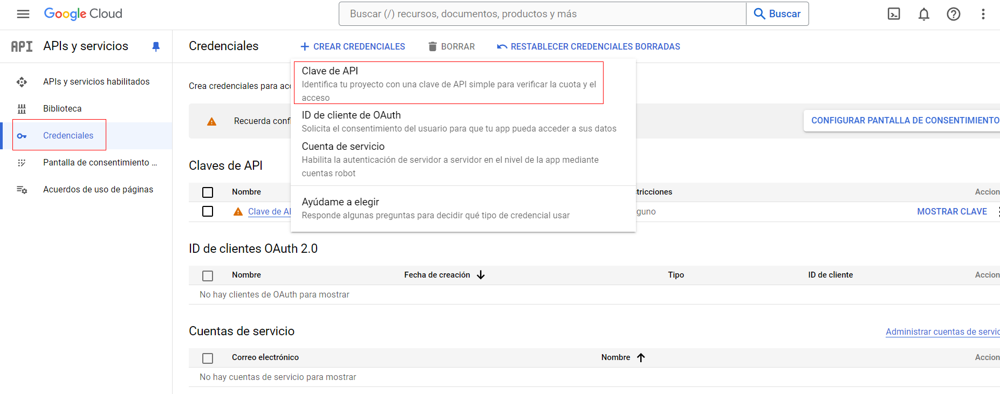
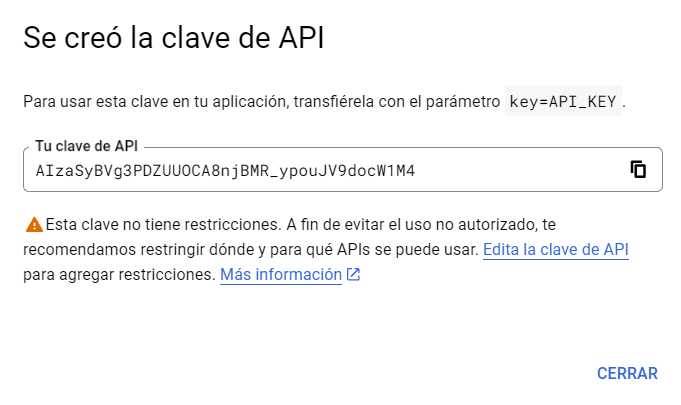
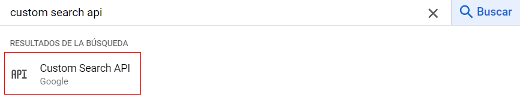
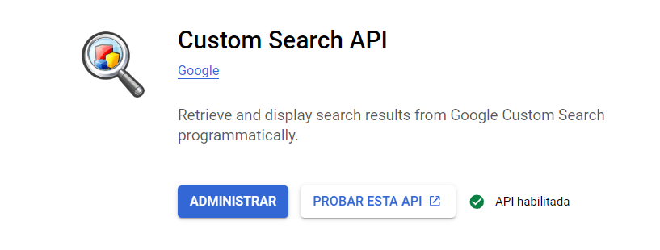
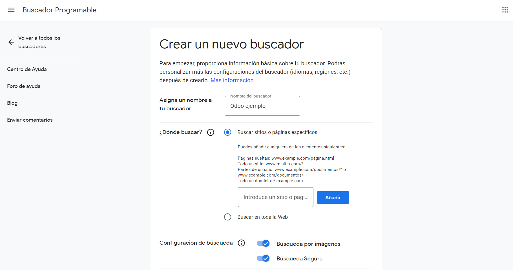
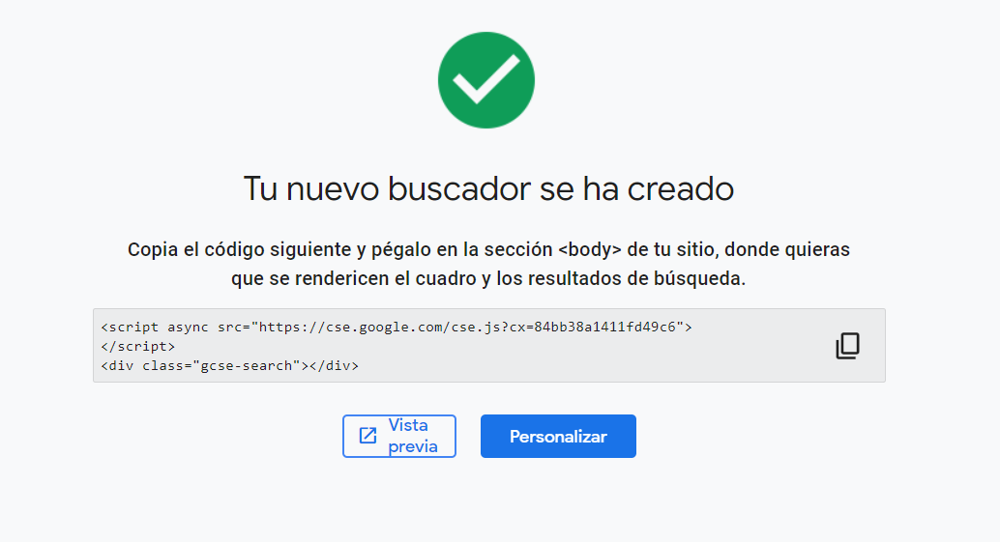
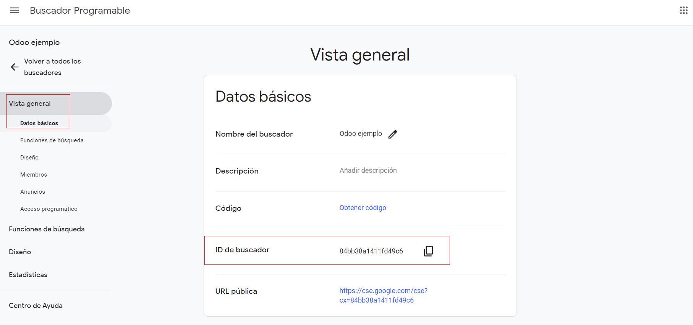
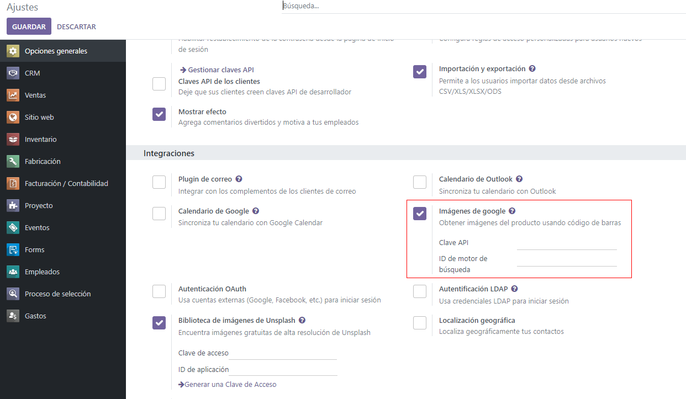
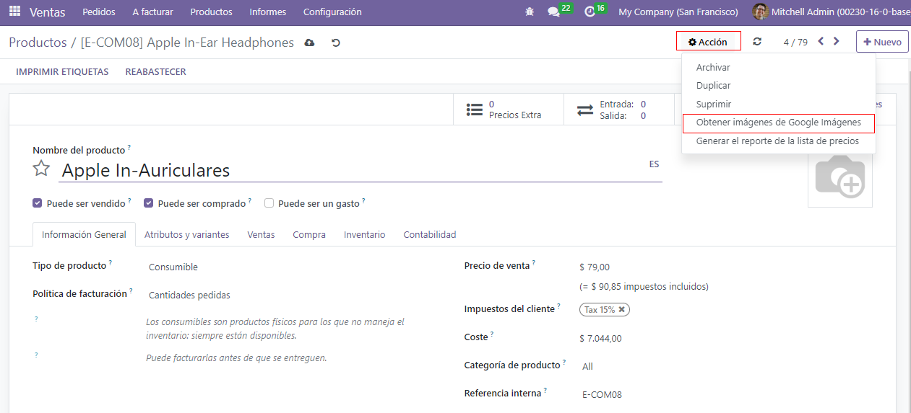
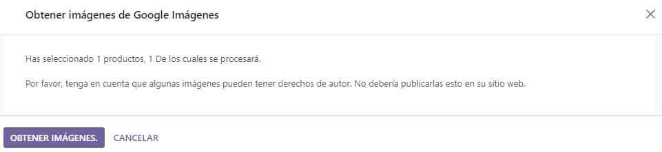

Imágenes para productos con Google Imágenes¶
Que los productos en Odoo cuenten con las imágenes apropiadas es útil por varios motivos. Sin embargo, asignar imágenes a varios productos puede tomar mucho tiempo.
Afortunadamente, si configura la API de Google Custom Search dentro de una base de datos de Odoo podrá encontrar imágenes para los productos con mucha facilidad gracias a sus códigos de barras.
Configuración¶
Para poder usar Google Custom Search en una base de datos deberá configurar de forma adecuada su base y la API de Google.
Nota
Las cuentas gratuitas de Google permiten que los usuarios seleccionen hasta 100 imágenes gratuitas al día. En caso de que necesiten más, entonces deben usar la versión de pago.
Tablero de la API de Google¶
Vaya a la página APIs y servicios de Google Cloud Platform para generar las credenciales API de Google Custom Search. Inicie sesión con una cuenta de Google y acepte los Términos del Servicio, para esto seleccione la casilla y haga clic en Aceptar y continuar.
Una vez aquí, seleccione o cree un proyecto de API para almacenar las credenciales. Primero proporcione un nombre de proyecto fácil de recordar, seleccione una ubicación (si la hay) y luego haga clic en Crear.
Una vez que la opción Credenciales en la barra lateral izquierda esté seleccionada haga clic en Crear credenciales y elija Clave API en el menú desplegable.
Aparecerá una ventana emergente con el mensaje Clave API creada con una clave API personalizada. Copie y guarde su clave API, la utilizará después. Una vez que haya copiado la clave (y la haya almacenado para su uso posterior), haga clic en el botón Cerrar de la ventana emergente.
En esta página, busque
Custom Search APIy selecciónela.Una vez que se encuentre en la página de Custom Search API haga clic en Habilitar.

Tablero de Google Programmable Search¶
A continuación, vaya al Motor de Búsqueda Programable de Google (no está disponible en español) y haga clic en alguno de los botones Get started (es decir, comenzar). Si aún no ha iniciado sesión, entonces inicie sesión con una cuenta de Google.
En el formulario Create a new search engine (Crear un nuevo motor de búsqueda), complete el nombre del motor de búsqueda junto con lo que debería buscar. Asegúrese de habilitar Image Search y SafeSearch.
Haga clic en Crear para validar el formulario.
Después de esto aparecerá una nueva página con el texto «Your new search engine has been created» (Su nuevo motor de búsqueda ha sido creado).
Desde esta página, haga clic en Personalizar para abrir la página . Luego copie el ID del campo ID del motor de búsqueda, es necesario para realizar la configuración en Odoo.

Odoo¶
En la base de datos de Odoo, vaya a la y diríjase a la sección Integraciones. Una vez allí, seleccione la casilla junto a Google Imágenes y después haga clic en Guardar.
Regrese a la y, de nuevo, diríjase a la sección Integraciones. En la sección Google Imágenes deberá completar los campos Clave API así como también ID de motor de búsqueda.
Haga clic en Guardar.
Imágenes de producto en Odoo con la API de Google Custom Search¶
Puede agregar imágenes a los productos en Odoo en cualquier producto o sus variantes. Este proceso se puede realizar en cualquier aplicación de Odoo que proporcione acceso a las páginas de productos, por ejemplo, Ventas, Inventario, entre otras.
A continuación encontrará una guía con todas las instrucciones sobre el uso de la API de Google Custom Search para asignar imágenes a productos desde la aplicación Ventas de Odoo:
Desde la aplicación Ventas vaya a la página Productos () o a la página Variantes de producto ().
Seleccione el producto que necesita una imagen.
Nota
Solo se procesarán los productos (o las variantes) que tienen un código de barras, pero no tienen una imagen asignada.
Si selecciona un producto con una o más variantes, se procesa cada variante que coincida con los criterios correspondientes.
Haga clic en el icono Acción ⚙️ (engranaje) ubicado en la página del producto y, en el menú que aparece, seleccione Obtener imágenes de Google Imágenes.
Aparecerá una ventana emergente, allí haga clic en Obtener imágenes.
Una vez que haga clic, las imágenes irán apareciendo.
Nota
Solo las primeras diez imágenes se obtienen de inmediato. Si seleccionó más, se irán obteniendo en segundo plano.
El trabajo en segundo plano procesa alrededor de 100 imágenes por minuto. Si alcanza la cuota autorizada por Google (ya sea con un plan gratuito o de pago), el trabajo en segundo plano se pausará durante 24 horas y después continuará donde se detuvo el día anterior.